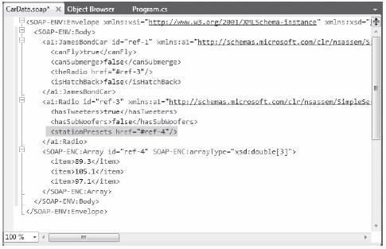

Windows Presentation Foundation provides support for what might be considered control-agnostic events with control commands. A typical .NET event is defined within a specific base class and can only be used by that class or a derivative thereof. Therefore, normal .NET events are tightly coupled to the class in which they are defined.
In contrast, WPF control commands are event-like entities that are independent from a specific control and, in many cases, can be successfully applied to numerous (and seemingly unrelated) control types. By way of a few examples, WPF supports Copy, Paste, and Cut commands, which you can apply to a wide variety of UI elements (e.g., menu items, toolbar buttons, and custom buttons), as well as keyboard shortcuts (e.g., Ctrl+C, and Ctrl+V).
While other UI toolkits (such as Windows Forms) provided standard events for such purposes, using them typically left you with redundant and hard to maintain code. Under the WPF model, you can use commands as an alternative. The end result typically yields a smaller and more flexible code base.
WPF ships with numerous built-in control commands, all of which you can configure with associated keyboard shortcuts (or other input gestures). Programmatically speaking, a WPF control command is any object that supports a property (often called Command) that returns an object implementing the ICommand interface, as shown here:
public interface ICommand { // Occurs when changes occur that affect whether // or not the command should execute. event EventHandler CanExecuteChanged; // Defines the method that determines whether the command // can execute in its current state. bool CanExecute(object parameter); // Defines the method to be called when the command is invoked. void Execute(object parameter); }
While you could provide your own implementation of this interface to account for a control command, the chances that you will need to do so are slim, given that the functionality provided by the five WPF classes contains close to 100 command objects out-of-the-box. These classes define numerous properties that expose specific command objects, each of which implements ICommand.
While you could provide your own implementation of this interface to account for a control command, the chances that you will need to do so are slim, given that the functionality provided by the five WPF classes contains close to 100 command objects out-of-the-box. These classes define numerous properties that expose specific command objects, each of which implements ICommand.
Table 28-3 documents some of the standard command objects available (be sure to consult the .NET Framework 4.0 SDK documentation for complete details).
Table 28-3. The Intrinsic WPF Control Command Objects
| WPF Class | Command Objects | Meaning in Life |
|---|---|---|
| ApplicationCommands | Close, Copy, Cut, Delete, Find, Open, Paste, Save, SaveAs, Redo, Undo | Various application-level commands |
| ComponentCommands | MoveDown, MoveFocusBack, MoveLeft, MoveRight, ScrollToEnd, ScrollToHome | Various commands common to UI components |
| MediaCommands | BoostBase, ChannelUp, ChannelDown, FastForward, NextTrack, Play, Rewind, Select, Stop | Various media-centric commands |
| NavigationCommands | BrowseBack, BrowseForward, Favorites, LastPage, NextPage, Zoom | Various commands relating to the WPF navigation model |
| EditingCommands | AlignCenter, CorrectSpellingError, DecreaseFontSize, EnterLineBreak, EnterParagraphBreak, MoveDownByLine, MoveRightByWord | Various commands relating to the WPF document API |
If you wish to connect any of these command properties to a UI element that supports the Command property (such as a Button or MenuItem), you have little work to do. You can see how to do this by updating the current menu system so it supports a new topmost menu item named Edit and three subitems to account for copying, pasting, and cutting of textual data:
<Menu DockPanel.Dock ="Top" HorizontalAlignment="Left" Background="White" BorderBrush ="Black"> <MenuItem Header="_File" Click ="FileExit_Click" > <Separator/> <MenuItem Header ="_Exit" MouseEnter ="MouseEnterExitArea" MouseLeave ="MouseLeaveArea" Click ="FileExit_Click"/> </MenuItem> <!-- New menu item with commands! --> <MenuItem Header="_Edit"> <MenuItem Command ="ApplicationCommands.Copy"/> <MenuItem Command ="ApplicationCommands.Cut"/> <MenuItem Command ="ApplicationCommands.Paste"/> </MenuItem> <MenuItem Header="_Tools"> <MenuItem Header ="_Spelling Hints" MouseEnter ="MouseEnterToolsHintsArea" MouseLeave ="MouseLeaveArea" Click ="ToolsSpellingHints_Click"/> </MenuItem> </Menu>
Notice that each of the sub-items on the Edit menu has a value assigned to the Command property. Doing this means that the menu items automatically receive the correct name and shortcut key (e.g., Ctrl+C for a cut operation) in the menu item UI; it also means that the application is now copy, cut, and paste aware with no procedural code!
If you were to run the application and select some of your text, you would be able to use your new menu items out-of-the-box. As a bonus, your application is also equipped to respond to a standard right-click operation to present the user with the same options (Figure 28-15).
Figure 28-15 Command objects provide a good deal of built-in functionality for free
If you wish to connect a command object to an arbitrary (application-specific) event, you will need to drop down to procedural code. Doing so is not complex, but it does involve a bit more logic than you see in XAML. For example, assume that want to have the entire window respond to the F1 key, so that when the end user presses this key, he will activate an associated help system.
Also, assume your code file for the main window defines a new method named SetF1CommandBinding(), which you call within the constructor after the call to InitializeComponent():
public MainWindow()
{
InitializeComponent();
SetF1CommandBinding();
}
This new method will programmatically create a new CommandBinding object, which you can use whenever you wish to bind a command object to a given event handler in your application. Here, you configure your CommandBinding object to operate with the ApplicationCommands.Help command, which is automatically F1-aware:
private void SetF1CommandBinding() { CommandBinding helpBinding = new CommandBinding(ApplicationCommands.Help); helpBinding.CanExecute += CanHelpExecute; helpBinding.Executed += HelpExecuted; CommandBindings.Add(helpBinding); }
Most CommandBinding objects will want to handle the CanExecute event (which allows you to specify whether the command occurs based on the operation of your program) and the Executed event (which is where you can author the content that should occur once the command occurs). Add the following event handlers to your Window-derived type (note the format of each method, as required by the associated delegates):
private void CanHelpExecute(object sender, CanExecuteRoutedEventArgs e) { // Here, you can set CanExecute to false if you wish to prevent the // command from executing. e.CanExecute = true; } private void HelpExecuted(object sender, ExecutedRoutedEventArgs e) { MessageBox.Show("Look, it is not that difficult. Just type something!", "Help!"); }
In the preceding snippet, you implemented CanHelpExecute() so it always allows F1 help to launch; you do this by simply returning true. However, if you have certain situations where the help system should not display, you can account for this and return false when necessary. Your “help system” displayed within HelpExecuted() is little more than a message box. At this point, you can run your application. When you press the F1 key on your keyboard, you will see your (less than helpful, if not a bit insulting) user-guidance system (see Figure 28-16).
Figure 28-16 Your custom help system (which is not quite as helpful as the user would hope)
To complete the current example, you will add functionality to save your text data to an external file and open up *.txt files for editing. If you want to take the long road, you can manually add programming logic that enables or disables new menu items based on whether your TextBox has data inside it. Once again, however, you can use commands to decrease your burden.
Begin by updating the <MenuItem> element that represents your topmost File menu by adding two new submenus that use the Save and Open ApplicationCommands objects:
<MenuItem Header="_File"> <MenuItem Command ="ApplicationCommands.Open"/> <MenuItem Command ="ApplicationCommands.Save"/> <Separator/> <MenuItem Header ="_Exit" MouseEnter ="MouseEnterExitArea" MouseLeave ="MouseLeaveArea" Click ="FileExit_Click"/> </MenuItem>
Again, remember that all command objects implement the ICommand interface, which defines two events (CanExecute and Executed). Now you need to enable the entire window, so it can check whether it is currently OK to fire these commands; if so, you can define an event handler to execute the custom code.
You do this by populating the CommandBindings collection maintained by the window. To do so in XAML requires that you use property element syntax to define a <Window.CommandBindings> scope in which you place two <CommandBinding> definitions. Update your <Window> like this:
<Window x:Class="MyWordPad.MainWindow" xmlns="http://schemas.microsoft.com/winfx/2006/xaml/presentation" xmlns:x="http://schemas.microsoft.com/winfx/2006/xaml" Title="MySpellChecker" Height="331" Width="508" WindowStartupLocation ="CenterScreen" > <!-- This will inform the Window which handlers to call, when testing for the Open and Save commands. --> <Window.CommandBindings> <CommandBinding Command="ApplicationCommands.Open" Executed="OpenCmdExecuted" CanExecute="OpenCmdCanExecute"/> <CommandBinding Command="ApplicationCommands.Save" Executed="SaveCmdExecuted" CanExecute="SaveCmdCanExecute"/> </Window.CommandBindings> <!-- This panel establishes the content for the window --> <DockPanel> ... </DockPanel> </Window>
Now right-click each of the Executed and CanExecute attributes in your XAML editor and pick the Navigate to Event Handler menu option. As you might recall from Chapter 27, this will automatically generate stub code for the event itself. At this point, you should have four empty handlers in the C# code file for the window.
The implementation of CanExecute event handlers will tell the window that it is OK to fire the corresponding Executed events at any time by setting the CanExecute property of the incoming CanExecuteRoutedEventArgs object:
private void OpenCmdCanExecute(object sender, CanExecuteRoutedEventArgs e) { e.CanExecute = true; } private void SaveCmdCanExecute(object sender, CanExecuteRoutedEventArgs e) { e.CanExecute = true; }
The corresponding Executed handlers perform the actual work of displaying the open and save dialog boxes; they also send the data in your TextBox to a file. Begin by making sure that you import the System.IO and Microsoft.Win32 namespaces into your code file. The completed code is straightforward:
private void OpenCmdExecuted(object sender, ExecutedRoutedEventArgs e) { // Create an open file dialog box and only show XAML files. OpenFileDialog openDlg = new OpenFileDialog(); openDlg.Filter = "Text Files |*.txt"; // Did they click on the OK button? if (true == openDlg.ShowDialog()) { // Load all text of selected file. string dataFromFile = File.ReadAllText(openDlg.FileName); // Show string in TextBox. txtData.Text = dataFromFile; } } private void SaveCmdExecuted(object sender, ExecutedRoutedEventArgs e) { SaveFileDialog saveDlg = new SaveFileDialog(); saveDlg.Filter = "Text Files |*.txt"; // Did they click on the OK button? if (true == saveDlg.ShowDialog()) { // Save data in the TextBox to the named file. File.WriteAllText(saveDlg.FileName, txtData.Text); } }
That wraps up this example and your initial look at working with WPF controls. Here, you learned how to work with menu systems, status bars, tool bars, nested panels, and a few basic UI controls, such as TextBox and Expander. The next example will work with some more exotic controls, while examining several important WPF services at the same time. As an added bonus, you will build the interface using Expression Blend.
Source Code You can find the MyWordPad project under the Chapter 28 subdirectory.